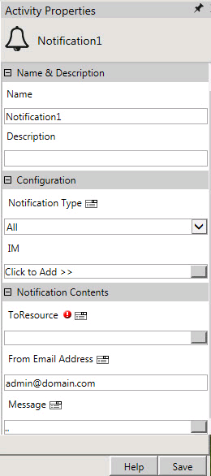
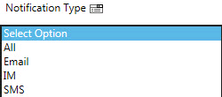
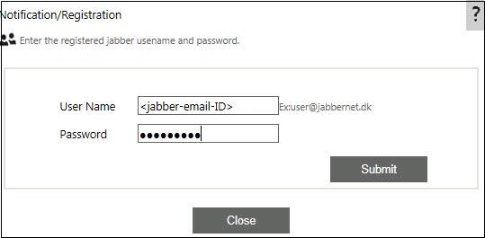
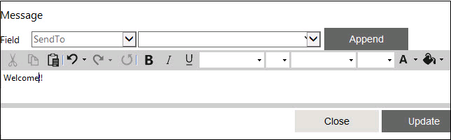

No
Configuring the Notification Activity
This section gives you details of configuring the Notification activity to send instant messages through a workflow.
- Create a new workflow, say TelematicsIMWF. In the Process Designer, select Communication activities.
- Drag and drop a Notification activity. Right click the notification activity to access the Activity property screen.

- Set Notification Type property as "IM".

- Set the IM property by entering the registered Jabber username and password.
Refer step 10 of the section Steps for configuring Jabber Server account for MSN transporter.

Note: If a single Jabber account is used for communication, the details of the same can be updated in the Communication tab of Global Settings window. This ensures that the User Name and Password is updated automatically in the Notification/Registration window. You can however change the default values if you use a different Jabber account.
- Click Submit.
- Notification/Registration screen appears. Click Continue. Enter the registered Transport service's Jabber ID. Click Update.
See step 14 of the section Steps for configuring Jabber Server account for MSN transporter for details on Transport service's Jabber ID. Note: Jabber ID is not required for Gmail configuration.
- Set the To Resource property. Select the actor to whom a Instant Message notification has to be sent.
- Refer the topic Storing the Instant Messenger Id for the User.
- Set the Message property with the text to be sent as an instant message.

- Click Save to save the activity properties.
- Publish and Test Run the workflow.
The Instant Message Notification will be sent to the selected actor's Destination Id (IM Id stored in User List).